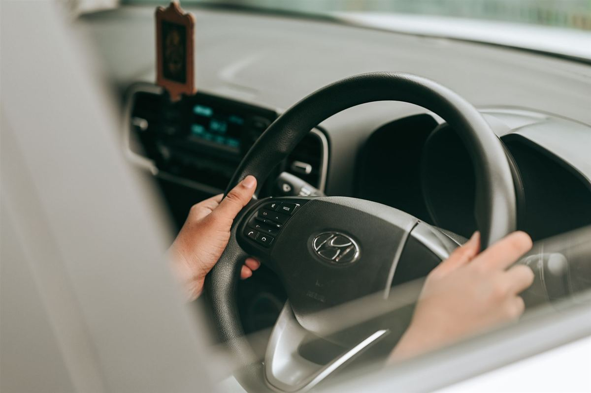

Permis B sans code — boîte automatique
899 €
- Test d'évaluation
- Accueil et constitution du dossier
- Fournitures pédagogiques (fiche de suivi, livret)
- 13 leçons d'une heure de conduite — boîte automatique
Permis B · Fréjus · Saint-Raphaël
Boîte manuelle ou automatique, avec ou sans code : nous construisons avec vous la formule la plus adaptée, puis nous vous accompagnons jusqu'à l'examen, avec près de 30 ans d'expérience.

Déroulement
Chaque élève avance à son rythme ; voici les grandes étapes de votre formation.
Une première séance au volant pour estimer, avec vous, le nombre d'heures de conduite adapté à votre profil.
Vous révisez en ligne (160 séries pendant 3 mois) et vous vous entraînez à l'auto-école avec des tests illimités pendant 6 mois. Nous vous présentons à l'examen quand vous êtes prêt.
Des leçons d'une heure en boîte manuelle ou automatique, avec un bilan personnalisé à la fin de chaque séance pour suivre vos progrès.
Un coaching ciblé pour aborder l'épreuve sereinement et mettre toutes les chances de votre côté le jour J.
Bien choisir
En boîte automatique, nos forfaits prévoient 13 leçons de conduite contre 20 en boîte manuelle : le permis est plus rapide à obtenir et moins cher, dès 899 €. Vous pourrez ensuite conduire une voiture manuelle en levant le code 78 grâce à 7 leçons (425 €), sans repasser d'examen. Tout savoir sur le permis boîte automatique.
En boîte manuelle, vous pouvez conduire tous les véhicules de catégorie B dès l'obtention du permis. Le forfait permis B classique, avec le code, comprend 20 leçons de conduite pour 1 220 €.
Vous hésitez ? Le test d'évaluation et un échange avec notre équipe vous aident à choisir la formule qui vous correspond.
Nos forfaits
Accueil, constitution du dossier et fournitures pédagogiques compris. Tarifs TTC, effectifs au 12/04/2026.
899 €
1 049 €
1 120 €
1 220 €
Non compris : redevance de 30 € pour l'examen du code · leçon supplémentaire 55 € · accompagnement à l'examen de conduite 55 €. Voir tous nos tarifs →
Questions fréquentes
Nos forfaits permis B vont de 899 € (sans code, boîte automatique, 13 leçons) à 1 220 € (permis B classique avec code, 20 leçons). Ils comprennent l'accueil, la constitution du dossier et les fournitures pédagogiques. La redevance de l'examen du code (30 €), l'accompagnement à l'examen de conduite (55 €) et les éventuelles leçons supplémentaires (55 €) sont en plus.
L'examen du permis B est accessible dès 17 ans. Pour commencer plus tôt, la conduite accompagnée est possible dès 15 ans.
Les forfaits avec code incluent l'accès au code en ligne (160 séries pendant 3 mois) et des tests de code illimités pendant 6 mois à l'auto-école. Les forfaits sans code s'adressent aux élèves qui ont déjà obtenu leur code de la route.
Le volume dépend de chaque élève : le test d'évaluation permet de l'estimer au départ. Nos forfaits comprennent 13 leçons en boîte automatique ou 20 leçons en boîte manuelle, avec un bilan à chaque séance. Une leçon supplémentaire coûte 55 €.
Une question, un devis, une inscription : nous vous répondons rapidement.